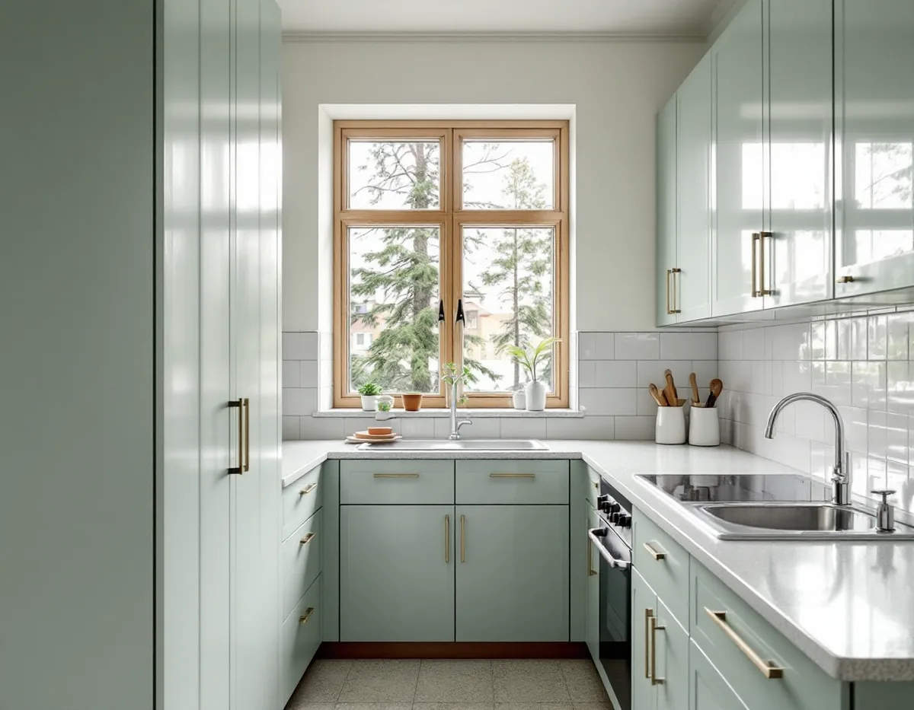
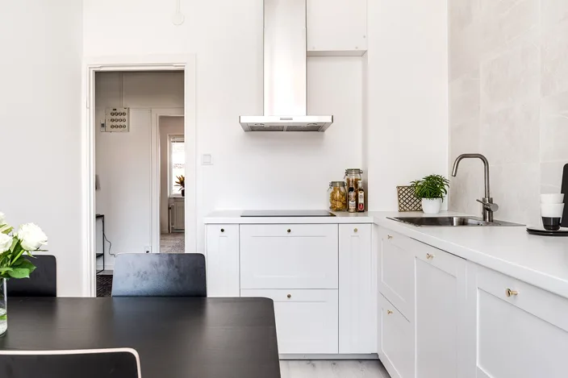

Platsbesök
Vi ser på kök, väggar, golv och fönsterbänkar och tar reda på husets byggår.
Västertorp och Fruängen byggdes när asbest fortfarande användes i byggmaterial, och många av lägenheterna där är i dag bostadsrätter. Det påverkar både vad som ska provas före rivningen och vem som ska säga ja till ändringarna. Geal Entreprenad AB bygger om kök i bostadsrätter, radhus och villor i Hägersten, med gratis platsbesök, skriftligt kostnadsförslag och ROT-avdraget direkt på fakturan.

Enligt Stadsmuseets Stockholms Spår byggdes Västertorp ut efter en stadsplan som fastställdes 1947 och som liknade idealstadsdelen i generalplanen Det framtida Stockholm från 1945. Här genomfördes för första gången i Sverige ett trafikseparerat samhälle, där fotgängarna gick på gångvägar i parkerna mellan husen. Tunnelbanestationen invigdes 1964.
Fruängen uppfördes i huvudsak under senare delen av 1950-talet, som en av de tunnelbanestäder som byggdes i kommunal regi för att få bukt med bostadsbristen efter kriget. Stadsplanerna upprättades 1952–53 av Göran Sidenbladh vid stadsplanekontoret, och området skulle få bostäder för över 8 000 invånare.
Stadens områdesfakta för 2025 visar hur husen används i dag. I Västertorp finns 4 315 bostäder, varav 1 627 bostadsrätter, och nästan hälften av lägenheterna i flerbostadshusen är tvåor. I Fruängen är 3 495 av 5 474 bostäder bostadsrätter. Styrelsen har alltså ofta ett ord med i laget när köket görs om. Mer om planeringen i allmänhet finns på sidan om köksrenovering.

Boverket skriver att det är sannolikt att det finns asbest någonstans i en byggnad som uppfördes mellan 1940 och 1980, och att användningen förbjöds inom byggsektorn 1982. Asbest kan också ha kommit in vid senare renoveringar. Så länge materialet är inkapslat är det ingen fara, men när det bearbetas så att det dammar frigörs fibrer som är farliga att andas in.
I ett kök finns flera av de ställen som Boverket räknar upp: kakel- och klinkerfix och fog, golvmattor och limmet under dem, golvplattor, fönsterbänkar, tätmassor och ventilationskanaler. Provtagning och analys är enligt Boverket det enda säkra sättet att veta. Därför tar vi prov på misstänkta material innan något rivs i en lägenhet från den här tiden.
Visar provet asbest krävs enligt Arbetsmiljöverket tillstånd för att ett företag ska få riva eller sanera materialet, och ansökan ska göras åtta veckor innan arbetet ska börja. Rivning inomhus görs i inneslutning med luftsluss och undertryck. Det påverkar tidplanen mer än något annat i köket, så vi vill ha svaret innan startdatum bestäms.
Vill du ta bort väggen mellan kök och vardagsrum i en bostadsrätt gäller bostadsrättslagen: ingrepp i en bärande konstruktion, ändring av ledningar för avlopp, värme, gas eller vatten och ändring av ventilationen kräver styrelsens tillstånd. Styrelsen får bara vägra om åtgärden är till påtaglig skada eller olägenhet för föreningen, och tillståndet kan förenas med villkor. Den som är missnöjd med beslutet kan begära att hyresnämnden prövar frågan.
Stockholms stad kräver inget bygglov för att flytta ett kök, men en anmälan och ett startbesked om ändringen påverkar bärande konstruktion eller brandskydd, ändrar ventilationen väsentligt eller kräver en ny VA-stam i ett nytt schakt. Beslut ska komma inom fyra veckor från att anmälan är komplett, med möjlighet till förlängning en gång. En konstruktionsritning till anmälan ska tas fram av en sakkunnig konstruktör.
I områdets radhus och villor, till exempel de knappt 300 småhusbostäderna i Västberga, bestämmer du själv, men samma tekniska krav gäller. Mer om väggar och tak inomhus finns hos målare i Hägersten, och om husens tak hos takläggare i Hägersten.
Vi ser på kök, väggar, golv och fönsterbänkar och tar reda på husets byggår.
Misstänkta material provas och analyseras innan något rivs.
Du får en beskrivning av arbetet att lämna till föreningen, med konstruktörens underlag om en vägg berörs.
Rivning, eventuell sanering, installationer och montering redovisas var för sig.
Gamla skåp och ytskikt tas bort och rör, el och fläkt dras enligt planen.
Stomme, bänkskiva och vitvaror monteras och vi går igenom köket med dig.
I en bostadsrätt godtar Skatteverket rotavdrag för att riva innerväggar och bygga om lägenhetens planlösning, för att montera fast köksinredning och installera vitvaror i samband med byggarbetet och för att byggstäda material och grovsopor efteråt. Arbetet ska göras innanför lägenhetens väggar, tak och golv och ingå i ditt underhållsansvar enligt stadgarna.
Avdraget är 30 procent av arbetskostnaden, högst 50 000 kr per person och år och högst 75 000 kr tillsammans med rutavdrag. Material och resor ger inget avdrag, och att forsla bort rivningsrester räknas inte. Geal drar avdraget direkt på fakturan.
Visar provet asbest tillkommer sanering av ett företag med tillstånd, och det kan också flytta startdatum. En bärande vägg som ska bort lägger till konstruktör, anmälan och balk. Hiss och trapphus påverkar hur skåp och bänkskiva kommer upp. Du får ett skriftligt kostnadsförslag efter det gratis platsbesöket.
Planering, el, VVS, fläkt och väggar.
Köksrenovering i Stockholm →Takbyte, takbesiktning och plåtarbeten.
Takläggare i Hägersten →Kuperad tomt, stödmur och dränering.
Byggföretag i Hägersten →Småstugor, typritningar och panel.
Fasadrenovering i Hägersten →Lägenheter, villor vid Mälaren och radhus.
Målare i Hägersten →Låglutande tak och takavvattning i Hägersten.
Plåtslagare i Hägersten →